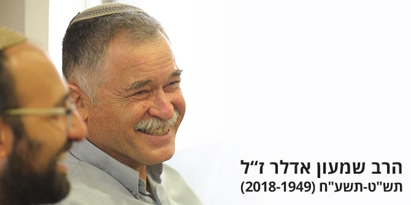
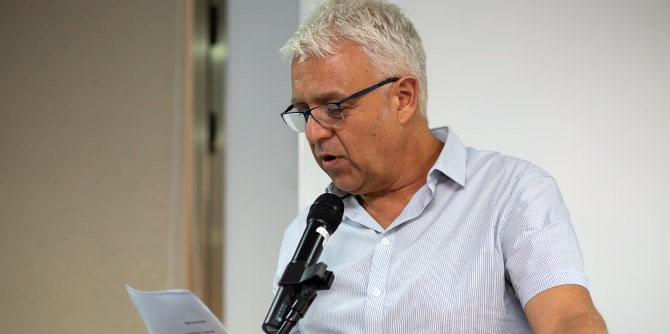
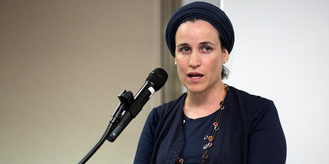

שמעון אדלר נולד בישראל בשנת תש"ט (1949), היה בוגר ישיבת מרכז הרב ומוסמך בהיסטוריה של השואה. הוא ניהל את אולפנת בני עקיבא לבנות ביישוב אבן שמואל שבחבל לכיש, היה מפקח בחינוך הממלכתי-דתי, ובמשך תשע שנים ראש מינהל החינוך הדתי במשרד החינוך.
שמעון הוא בוגר מחזור א' של בית ספר מנדל למנהיגות חינוכית, ובמהלך לימודיו פיתח מודל לבתי ספר להעצמת החוזקות של תלמידים. בתום לימודיו יישם שמעון את המודל בישיבה התיכונית "אמי"ת - חברותא" בכפר בתיה, שאותה הקים ובראשה עמד תשע שנים.
בשנים האחרונות, לאחר שסיים את תפקידו כראש מינהל החינוך הדתי, חזר שמעון להיות מחנך כיתה בתיכון הימלפרב בירושלים, מתוך התפיסה הערכית שאפיינה אותו, שעל-פיה החינוך והמגע עם התלמידים הם העיקר. גם בתור חבר סגל בית ספר מנדל למנהיגות חינוכית, המגע עם העמיתים היה עבורו העשייה המרכזית, ובה השקיע את מרב מרצו.

דני בר גיורא, מנהל בית ספר מנדל למנהיגות חינוכית
"בשנים שבהן היה שמעון חלק מהסגל כאן, הוא שימש כדיקן השנה השנייה בארבעה מחזורים, שימש כמנחה בסדנאות העמיתים ומנחה אישי לעמיתים רבים, ובשנתיים האחרונות הוביל את סדנת החינוכאים. מעבר לכך, הוא היה נוכח כאן, ולנוכחותו, לדמותו, לאישיותו, הייתה השפעה גדולה מאוד על כל המסתובבים פה. הן הקרינו והשפיעו על רבים מאיתנו גם מבלי שדיבר", אמר דני בר גיורא, מנהל בית ספר מנדל למנהיגות חינוכית, במפגש שבו השתתפו בני משפחתו של שמעון, עמיתים ובוגרים של בית הספר, חברי סגל ואורחים נוספים שהכירו והוקירו אותו.
"להיות בת של איש אמת, של מי שאמרו עליו שהוא הסרגל שעל-פיו מודדים את היושר, זה לשמוע לעתים ביקורת נוקבת וכואבת, במקום שנראה שנכון לעשות כך, גם אם זה לא תמיד נחמד ונעים", אמרה
שרה לבנון, בתו של שמעון אדלר. "זה ללמוד לקבל החלטות משמעותיות בחיים רק משיקולים טהורים, ללמוד להוציא את האגו מהמשחק ולהישאר עם האמת הצרופה".

שרה לבנון, בתו של שמעון אדלר
את משנתו החינוכית הציג שמעון בחוברת שיצאה עם סיום לימודיו בבית ספר מנדל למנהיגות חינוכית. בדבריו נשען על תפיסתו של רבא, שלפיה חוכמה מביאה לידי מעשה, ושהמעשה הוא תכלית קניין החוכמה. בהשראת הדברים קבע כי בכוחו של לימוד לשנות את התנהגותו של התלמיד, וראה בכך את ההשראה למחנך הדתי. בעיקר העסיקו אותו התלמידים המתקשים בהתמדה הדרושה כדי לעמוד בתוכנית לימודים ישיבתית, שמכוונת לאידיאל שכולו לימוד תורה, ואינם זוכים לטיפול חינוכי הולם – דבר שלעתים משליך על התנהגותם. "לאלה ייעדתי את שנות לימודיי בבית הספר למנהיגות חינוכית", כתב שמעון. "ניסיתי למצוא דרך שבה יהיה הלימוד משפיע ומעצב את הצעיר, ברוח דברי רבא אך בשונה מההבנה המקובלת".
שמעון היה איש חינוך רב קשב ואנושיות, בעל מוסר בלתי מתפשר, שחיפש פתרונות יצירתיים ליצירת חברה מכילה. הוא לימד זכות על כל אדם, ותשומת לבו ודאגתו היו נתונות יותר מכול לאלו שלא הגיעו מן השדרה המרכזית של החברה. תכונה זו אפיינה אותו יותר מכול, ועל כך מעידים כל מי שזכו להיות בקרבתו – עמיתים וסגל כאחד.
{kind=link}
{kind=link}
{kind=link}